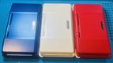

BARPIX REPAIRNintendo Specialist

Französisches UnternehmenSpezialist für Reparatur, Individualisierung und Einbau von Capture-Card-Kits an Nintendo-Konsolen. Technische Expertise und sorgfältige Verarbeitung.
Von der Notreparatur bis zum Einbau hochwertiger Capture-Card-Kits wird jede Konsole sorgfältig behandelt.
Hardware-Mod zum Streamen oder Aufnehmen direkt von Ihrer Konsole. Kompatibel mit OBS, Elgato, AverMedia. Sauberes, dezentes Ergebnis.
Defektes Display, Stick-Drift, Ladebuchse, Kartenleser, Tasten… Kostenlose Diagnose, Arbeit nach Angebot.
Gehäusetausch, individuelle Tasten, Lackierung, Sticker und UV-Druck. Geben Sie Ihrer Konsole neues Leben.
Hallo, ich bin Nicolas, Gründer von Barpix Repair. Als langjähriger Nintendo-Fan habe ich diese Leidenschaft in technisches Know-how verwandelt.
Jeder Auftrag wird sorgfältig und präzise ausgeführt. Ich arbeite sowohl für private Spieler als auch für Streamer und Content-Creator, die eine sauber integrierte Capture Card brauchen.
Mit Sitz in Frankreich arbeite ich per Postversand im ganzen Land.
Mehr erfahren →